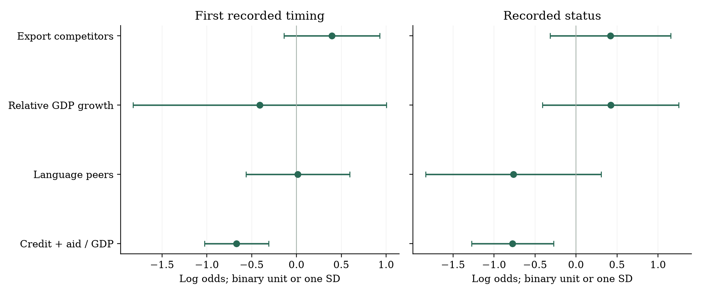

IFRS spread comparison
Equal-country to constant-GDP weighting. The same policy label does not determine which markets drive the estimate.
GLOBAL DISCLOSURE / PRIMARY FINDINGS
The information investors receive depends on a rule’s content, audience and scope. Its market consequences depend on more than its name.
Public financial reporting, climate requirements and confidential tax submissions change different information channels.
Equal-country and GDP-weighted liquidity comparisons differ substantially. The diffusion models do not establish that countries adopt disclosure rules because they observe causal liquidity benefits abroad.
The estimates describe policy-environment associations. Issuer eligibility, public-report timing and incomplete national histories limit causal interpretation.
Equal-country to constant-GDP weighting. The same policy label does not determine which markets drive the estimate.
The sign reverses with GDP weights. These reports go to tax authorities, so a direct investor-information channel is not implied.
A negative legal-origin-peer coefficient survives in a controlled status LPM. It runs against positive emulation and differs from the primary timing design.
A reporting standard, a climate obligation and a voluntary disclosure practice are different dimensions. The classifications keep them separate.
Following Krueger et al., the treatment starts once E, S and G disclosure are all required for the relevant population. When topics arrive gradually, the last topic supplies the date. India’s top-100 and top-500 phases remain distinct.
An explanation can be mandatory even when following a recommended practice is optional. Comply-or-explain therefore remains in the mandatory category; it is not coded as voluntary.
Krueger et al.’s firm-information-environment test uses I/B/E/S managerial earnings guidance. It is not a dummy for voluntary ESG reporting or the availability of an ESG score.
Climate and CSR: a climate-only mandate is not broad mandatory E+S+G. Climate governance is not a separate general G mandate. ISSB is a standards family; climate-first local application remains climate reporting. CSR expenditure alone is not a disclosure obligation. The author-coded full-ESG benchmark and independently documented scoped sustainability rules are retained separately.
BEPS Action 13 reports disclose group activities and tax information to tax authorities and can be exchanged under confidentiality and appropriate-use safeguards. They are not public investor reports. OECD definition ↗
The register covers public general-MNE income-tax reporting, including EU and Australian regimes. Banking disclosures under CRD Article 89 and extractive-payment reports are separate regimes. No banking public-CbCR event is identified in this inventory. European Commission definition ↗
| Policy class | Content and audience | Country-class cases |
|---|---|---|
| Financial reporting (IFRS) | Public consolidated financial statements; listed/consolidation scope. | 36 |
| Governance disclosure | Public governance/compliance statements; not full ESG by itself. | 12 |
| Multi-topic sustainability | Multi-topic sustainability reports; observed India/Philippines scope, not a global full-ESG date census. | 2 |
| Climate reporting | Public climate information, including local climate-first/S2 rules; not broad mandatory E+S+G. | 6 |
| Climate: financial institutions | Climate reporting confined to financial institutions. | 1 |
| Sustainability-related financial reporting | Material sustainability-related financial information under local S1/S2 or equivalents; topic coverage depends on materiality. | 6 |
| ISSB-informed sector reporting | ISSB-informed bank reporting; full standards alignment not established. | 1 |
| Structured financial filing | Structured financial filings; a reporting format rather than a sustainability topic. | 4 |
| Expanded auditor reporting | Public auditor reports; KAM/CAM scope and filer exceptions. | 36 |
| Audit oversight / rotation | Regulator/auditor oversight, registration or rotation; institutional channel. | 35 |
| Beneficial-ownership registers | Ownership registers; access restrictions and listed-company exemptions vary. | 18 |
| Confidential tax CbCR | Tax authorities; BEPS Action 13 group-level tax information, not public disclosure. | 120 |
| Public tax CbCR: general MNEs | Public general-MNE income-tax reports; not bank Article 89 or extractive-payment reporting. | 28 |
| Extractive-payment reporting | Public sector/project payments to governments; activity/size restrictions. | 9 |
| Supply-chain reporting / due diligence | Public statements/plans and due-diligence duties; nexus and size thresholds. | 8 |
| Token-offer / digital-asset rules | Token-offer/market-service rules; not automatic treatment of ordinary equity issuers. | 31 |
| Full E+S+G benchmark | Krueger et al. author-coded mandates, including comply-or-explain; separate 2002-2020 comparison sample. | 35 |
Counts refer to documented first country-class implementation years through 2025 and are not counts of unique statutes or eligible firms. The classified inventory contains 353 such cases; the 35-country full-ESG benchmark is separate and not added to that total. The benchmark also contains 30 author-never-coded controls. Climate and ISSB are not double-counted when they describe the same country-topic obligation. CSR expenditure alone is not an ESG disclosure mandate. No banking public-CbCR event is identified in the current general-MNE public-CbCR register.
The comparison holds outcome measurement constant while allowing the reporting obligation and audience to differ. Negative log-spread and price-impact contrasts indicate relative improvements in liquidity.
| Policy class | Log spread Equal | Log spread GDP | Log impact Equal | Log impact GDP | Zero fraction Equal | Zero fraction GDP |
|---|---|---|---|---|---|---|
| Financial reporting (IFRS) | -0.147 [20] | -0.014 [20] | -0.167 [21] | 0.056 [21] | -0.028 [22] | -0.033 [22] |
| Governance disclosure | 0.030 [5] | 0.226 [5] | 0.162 [5] | 0.376 [5] | 0.019 [5] | 0.035 [5] |
| Climate reporting | 0.083 [2] | -0.133 [2] | -0.003 [2] | -0.670 [2] | -0.016 [2] | -0.002 [2] |
| Sustainability-related financial reporting | 0.045 [1] | -0.161 [1] | 0.052 [1] | -0.174 [1] | 0.009 [1] | 0.001 [1] |
| Expanded auditor reporting | 0.025 [20] | -0.058 [20] | 0.199 [20] | 0.070 [20] | 0.000 [20] | -0.012 [20] |
| Audit oversight / rotation | 0.029 [4] | -0.109 [4] | 0.014 [6] | -0.143 [6] | -0.002 [6] | -0.000 [6] |
| Beneficial-ownership registers | 0.032 [11] | 0.067 [11] | -0.052 [11] | 0.149 [11] | 0.008 [11] | 0.011 [11] |
| Confidential tax CbCR | -0.057 [42] | 0.103 [42] | -0.166 [42] | -0.054 [42] | -0.002 [43] | 0.008 [43] |
| Extractive-payment reporting | 0.210 [1] | 0.159 [1] | 0.499 [1] | 0.483 [1] | -0.011 [1] | -0.017 [1] |
| Supply-chain reporting / due diligence | 0.066 [4] | 0.004 [4] | -0.143 [4] | -0.378 [4] | -0.013 [4] | -0.017 [4] |
| Token-offer / digital-asset rules | 0.016 [2] | -0.030 [2] | 0.260 [2] | 0.155 [2] | -0.017 [2] | -0.029 [2] |
| Full ESG (published benchmark) | -0.016 [27] | -0.052 [26] | -0.087 [29] | -0.360 [28] | -0.006 [29] | -0.006 [28] |
Each coefficient compares the balanced-security change from g-1 to g+1 with at least three later-case control countries. Brackets give treated-country support for that cell. Securities require at least 120 valid daily observations and countries at least 30 balanced securities. GDP weights use constant-2015-USD GDP in g-1; GDP-matched equal comparisons and exact cohort/assignment-cluster counts are provided online. The ESG benchmark is restricted to 2002-2020 and uses author-coded dates and controls. Multi-topic sustainability, financial-sector climate, ISSB-informed sector reporting, public general-MNE CbCR and XBRL lack the required support and are omitted from the coefficient rows. Estimates are descriptive national-market contrasts; no causal liquidity p-values are reported.
Points compare g+1 with g-1 among documented cases. Connecting lines show changes in economic weighting, not uncertainty. Country and cohort support can differ across outcomes. All supported classes and the separate full-ESG benchmark are shown.

Within each country, securities must be observed in g−1 and g+1, with at least 30 balanced securities. A cohort needs at least three later-case control countries. Already implemented countries are excluded as controls. GDP weights use g−1 information. Matched-support equal comparisons separate weighting from missing GDP coverage.
Country averages do not establish which firms are legally eligible. Reporting-period starts, legal application and the first public report can differ. Cluster-deletion ranges and balanced profiles are supporting diagnostics, not causal confidence intervals.
Following Koning et al., the models distinguish export competition, learning from earlier outcomes, peer emulation and financial dependence. National timing and accumulated recorded status ask different questions.
| Measure | Design | Controls | Coefficient (SE) | Raw p | Holm p | Rows / countries |
|---|---|---|---|---|---|---|
| Export competitors | Timing logit | No | 0.395 (0.266) | 0.1438 | 1.000 | 206 / 57 |
| Relative GDP growth | Timing logit | No | -0.409 (0.692) | 0.5584 | 1.000 | 72 / 31 |
| Language peers | Timing logit | No | 0.014 (0.290) | 0.9617 | 1.000 | 375 / 65 |
| Credit + aid / GDP | Timing logit | No | -0.669 (0.177) | 0.0005 | 0.193 | 242 / 48 |
| Export competitors | Timing logit | Yes | -0.051 (0.328) | 0.8771 | 1.000 | 191 / 54 |
| Relative GDP growth | Timing logit | Yes | -0.754 (0.859) | 0.3878 | 1.000 | 67 / 29 |
| Language peers | Timing logit | Yes | -0.107 (0.301) | 0.7241 | 1.000 | 316 / 53 |
| Credit + aid / GDP | Timing logit | Yes | -0.656 (0.350) | 0.0676 | 1.000 | 228 / 45 |
| Legal-origin peers | Status LPM | Yes | -0.546 (0.129) | 0.0001 | 0.033 | 880 / 62 |
Pooled documented independent country-class cases. All models include family-year strata; controlled specifications add lagged log GDP per capita, GDP growth and trade/GDP. Country-clustered SE appear in parentheses; nominal p-values use countries-1 degrees of freedom. Continuous focal variables are standardized within each estimation sample; relative-growth learning is binary. The broad Holm family covers all 425 stable focal coefficients, including alternate proxies and LPM specifications. The legal-origin status row is the only broad-adjustment discovery and is a linear probability coefficient, not log odds. Samples differ across rows. Full coefficients, narrow-primary adjustments, failures and exact memberships are retained in companion results.
Uncontrolled single-mechanism logits with family-year strata and country-clustered covariance. Bars are nominal 95 percent t intervals, not simultaneous intervals. Samples differ across measures and designs. The legal-origin status LPM discovery in Table 3 is an alternative proxy/model and is not one of the four plotted primary measures.

The isolated broad-adjustment discovery is a negative legal-origin-peer association in a controlled status LPM (coefficient -0.546; Holm p 0.033; 880 rows/62 countries). It does not support positive emulation and should not be presented as a causal diffusion mechanism. The primary timing measures remain inconclusive.
13 pages. Three tables. Two figures. The narrative moves from the investor-information problem to predictions, data, liquidity results, identification and international diffusion.
We examine how disclosure regulation relates to stock liquidity and international regulatory diffusion. The sample covers 1,055,142 security-years in 90 jurisdictions and distinguishes policies by information content, audience and reporting obligation. Liquidity comparisons vary across policy classes and country weights. The IFRS log-spread contrast changes from -0.147 with equal-country weights to -0.014 with GDP weights; the confidential tax-reporting contrast changes from -0.057 to 0.103. These results do not establish a common liquidity benefit. We distinguish mandatory E, S and G reporting from climate-only requirements and voluntary disclosure, and examine competition, learning, emulation and financial dependence in national implementation decisions. An isolated negative legal-origin-peer association survives broad adjustment in a status model, while the primary timing estimates do not establish the predicted diffusion channels. The evidence describes policy-environment associations; incomplete issuer eligibility and country histories limit causal interpretation.
Investors increasingly obtain corporate information through rules governing financial statements, sustainability reporting, ownership transparency and tax disclosure. These rules differ in what they require, which entities they cover and who can read the resulting information. A financial statement available to investors and a confidential tax report submitted to a revenue authority need not have the same capital-market consequences. Understanding those differences is central to assessing the economic role of disclosure regulation.
We examine two related questions. First, how does stock liquidity change around the implementation of disclosure-related policies? Second, are national implementation decisions associated with policies and outcomes observed abroad? We study liquidity because it measures an economically relevant feature of the information environment and can be constructed consistently across countries. We then distinguish exposure to foreign implementation from information about earlier implementers' outcomes.
The market sample contains 1,055,142 security-years for 99,100 quote identifiers in 90 jurisdictions during 2000-2025. The regulatory data contain 353 documented country-class cases with implementation years through 2025. We classify information content separately from reporting standards and distinguish a mandatory reporting response from voluntary participation. This treatment of scope is especially important for sustainability rules: a climate requirement is not a mandate covering all environmental, social and governance topics.
Disclosure may improve liquidity by reducing information asymmetry, facilitating comparison and attracting informed participation. Its benefits can be smaller when firms already provide the relevant information, when compliance is weak or when processing costs are high. Rules that provide information only to public authorities operate through a different channel. The sign and magnitude of market responses are therefore empirical questions rather than consequences of the regulatory label.
Our liquidity comparisons show substantial variation across policy classes. With equal-country weights, the IFRS log-spread contrast is -0.147, equivalent to -13.7 percent. With GDP weights, it is -0.014. Confidential tax country-by-country reporting has an equal-country contrast of -0.057, but a GDP-weighted contrast of 0.103. Economic weighting thus changes both magnitudes and, in some settings, signs. These differences caution against interpreting a negative market-wide comparison as a general disclosure benefit.
For international diffusion, we follow Koning, Mertens and Roosenboom (2018) in distinguishing competition, learning, emulation and coercion. Export-pattern similarity measures potential competition; relative outcomes among geographic neighbours measure potential learning; language and institutional peers measure potential emulation; and external financial dependence measures a possible coercion channel. The estimated associations depend on the available countries and legal histories. One of 425 stable focal coefficients passes a Holm adjustment across the complete model family: a negative legal-origin-peer association in a controlled linear probability model of recorded status. The primary timing models do not establish the predicted channels.
The analysis relates to two accounting questions. Krueger, Sautner, Tang and Zhong (2023) examine mandatory ESG reporting and show how implementation and information environments can shape liquidity responses. We extend the economic comparison to disclosure obligations with different audiences and scopes. Koning et al. (2018) examine the diffusion of IFRS; we ask whether similar mechanisms are observable across a broader set of regulatory choices. The resulting evidence concerns documented policy environments, rather than an identified average effect on every eligible issuer.
Public disclosure can reduce adverse selection by making information more widely available. The mechanism links reporting to trading costs: when investors are less concerned that counterparties possess superior information, quoted spreads and price impact should decline. Diamond and Verrecchia (1991) provide a theoretical basis for this prediction. More comparable financial and nonfinancial reports may also reduce the cost of evaluating firms across markets.
The competing argument is that additional requirements generate little useful information. Firms may already disclose the relevant facts, respond superficially, or produce information that is costly to interpret. A mandate can also impose compliance costs without changing beliefs about firm value. We therefore expect liquidity improvements when an obligation supplies incremental, credible public information to investors, while allowing the response to differ across policies and firms.
Information content, legal obligation and issuer coverage are separate dimensions. A climate report may discuss governance of climate risks without requiring broad governance or social disclosure. A CSR spending obligation is not itself a disclosure mandate. A comply-or-explain rule requires a reporting response even when the firm does not follow the recommended practice. Conversely, a voluntary framework does not become mandatory because firms can use it to satisfy another reporting requirement. These distinctions determine which firms receive a treatment and when.
The information audience also matters. Public country-by-country tax reporting can inform investors and other outside users directly. Confidential country-by-country reports support tax administrations' risk assessment and are exchanged subject to confidentiality and appropriate-use safeguards. Any liquidity association for the latter can reflect enforcement, tax uncertainty or concurrent reforms, rather than direct investor access. We expect stronger direct-information effects where the relevant information is both public and incremental, but differences between policy-class coefficients alone do not identify that channel.
Competition can induce a country to respond when rival destinations adopt a reporting regime. Learning instead predicts a response to favourable outcomes among earlier implementers. Emulation predicts adoption among accepted institutional or professional peers, including when economic success is uncertain. Coercion requires an actor with resources or authority to influence the national choice. These mechanisms imply different explanatory variables and cannot be inferred from a single measure of foreign exposure.
Following Koning et al. (2018), we relate implementation timing to prior policies among export competitors, relative growth or liquidity outcomes among geographic neighbours, peer-country implementation and external financial dependence. The learning prediction is particularly relevant to the connection between the two parts of the analysis: foreign outcomes must precede the domestic decision, and an observed liquidity gain must be distinguished from a causal benefit of the foreign rule.
Table 1 classifies the policies by information content and audience. Sustainability rules are separated into multi-topic reporting, climate reporting, financial-sector climate requirements, sustainability-related financial reporting and ISSB-informed sector requirements. ISSB identifies a standards family; local climate-first application is classified as climate reporting. Duplicate records for Australia's initial AASB S2 climate obligation count as one country-topic implementation.
We apply the mandatory-versus-voluntary distinction used by Krueger et al. (2023). Their ESG treatment begins only when disclosure covering all E, S and G topics is required; for gradual introductions, the last topic determines the date. Comply-or-explain remains in their mandatory category. Their firm-level voluntary-disclosure proxy is I/B/E/S earnings guidance, rather than voluntary ESG reporting. We retain their 35 treated and 30 never-coded countries as a separate 2002-2020 benchmark. Author-workbook publication years and topic-specific rules are not promoted into independently verified full-ESG adoption dates.
The distinction is substantive in India: the official 2012 business-responsibility rule covers the largest 100 listed firms, whereas Krueger et al. use the 2015 expansion to 500 firms. The Philippine 2019 reporting circular requires the first report with the 2019 annual report submitted in 2020. These are scope and information-timing differences, not interchangeable dates. Exact issuer fiscal boundaries are used only where observed.
Confidential tax CbCR comprises BEPS Action 13 reporting to tax authorities. Public tax CbCR in the register comprises general multinational income-tax reporting, including EU and Australian regimes. Banking disclosures under Article 89 of the EU Capital Requirements Directive are a distinct public regime and are not represented by an identified event in this register. Extractive-payment reports concern payments to governments and remain separate from income-tax CbCR. Group thresholds, entity roles and jurisdictional scope do not make every listed equity an eligible reporting entity.
Daily Datastream records provide prices, bid and ask quotes, local-currency total returns, volume and market capitalization. We retain major equity securities and primary country quotes, match trading and company-country classifications, and exclude observations after available delisting dates. Identical economic observations at a quote-date key are collapsed; conflicting observations are excluded. USD prices below 0.10, extreme returns and adjacent reversal observations are screened, and price-impact observations require at least USD 100 of trading value.
Annual quoted spread is the median relative bid-ask spread. Price impact is the median absolute decimal return divided by USD trading value; a fixed rescaling sets its units. Both enter in logarithms after within-year 1/99 winsorization. The zero-return fraction measures zero-return days among observed valid-return days on the inferred trading calendar. Each measure requires at least 120 valid daily observations; impact and zero returns also require price variation. These are calendar-year outcomes, whereas Krueger et al. align outcomes to firm fiscal years.
Let g denote a country's first recorded implementation year within a policy class. For each outcome, we retain the same securities in g-1 and g+1 and calculate their mean change within country. A country contributes only with at least 30 balanced securities. We subtract the corresponding mean change in at least three countries whose recorded implementation occurs after the comparison window. Already implemented countries do not serve as untreated controls. Supported cohorts are aggregated by treated-country mass under equal weights or by predetermined economic mass under the alternative weights.
GDP and sampled-market-cap weights are measured in g-1. GDP-matched equal-weight comparisons separate the effect of changing weights from changing data coverage. We also construct profiles using the same securities, countries and cohorts from g-3 through g+3. These comparisons condition on recorded cases and approximate exposure at the national market level. They are not an eligible-firm treatment effect or a complete implementation of a staggered difference-in-differences estimator.
The diffusion unit is a documented independent country-class-year. First-event models end at the first recorded implementation; repeated-status models examine recorded implementation status. Common legal waves are distinguished from independent national choices. Missing country histories remain unknown. Status observations are censored where documented scope or enforcement changes prevent a stable interpretation, including the USA beneficial-ownership narrowing and German supply-chain reporting-review suspension in 2025.
Export competitors are the five countries with the most similar export-destination patterns in raw COW data. Geographic learning uses ten nearby countries and compares earlier with later documented implementers using lagged GDP or liquidity outcomes. Language, legal-origin and IGO networks provide separate peer measures. Lagged IMF credit, including SDR allocations, and net aid relative to GDP measure financial dependence. All explanatory signals precede the focal year. Logit models include family-year strata and country-clustered covariance; controlled models add lagged GDP per capita, growth and trade/GDP. Minimum support is 50 rows, 15 countries, 10 ones and 10 zeros. We retain failed fits and adjust across all stable focal coefficients.
Table 2 reports the supported liquidity comparisons. Its equal-country and GDP-weighted columns use the same outcome definitions but answer different aggregation questions. Negative log-spread and price-impact values indicate relative improvements in liquidity; a lower zero-return fraction indicates less nontrading. The brackets report treated-country support for each cell. Classes without the required balanced securities or later-case controls have no reported coefficient.
The IFRS log-spread comparison is -0.147 with equal-country weights and -0.014 with GDP weights. For confidential tax CbCR, the corresponding comparisons are -0.057 and 0.103. Figure 1 places these values alongside the other supported classes and the separate full-ESG benchmark. There is no consistent liquidity improvement across classes and aggregation schemes. In particular, a confidential tax-reporting association cannot be interpreted as evidence that investors directly receive the report.
The classification prevents two misleading inferences. First, a climate-only mandate is not evidence of a full E, S and G treatment. Second, recent public multinational-tax reporting cannot be assigned the earlier history of confidential tax CbCR or banking transparency. National market averages also dilute obligations that cover only large issuers, multinational groups or particular activities. The table describes those policy environments without imposing uniform issuer eligibility.
The differences between equal-country and GDP-weighted estimates are economically substantial. Country weights determine which markets drive the contrast; they do not resolve endogenous implementation or concurrent reforms. The accompanying GDP-matched comparisons, concentration measures and assignment-cluster deletions show the extent to which results depend on coverage and a small number of countries. A cluster-deletion range is a sensitivity diagnostic rather than a confidence interval.
Timing creates an additional identification issue. Announcement, legal application, the first covered reporting period and public availability can occur in different years. Even balanced seven-year profiles cannot establish parallel trends when eligibility and earlier obligations are incompletely observed. Historical quote-to-issuer links and fiscal filing dates do not support a verified global firm assignment. An auxiliary current-identifier match also lacks the minimum confirmed comparison-arm support. Consequently, we report descriptive market comparisons and do not attach causal liquidity p-values.
Table 3 reports the pooled first-event timing models and controlled alternatives. The export-competition coefficient is 0.395 (raw p = 0.144); relative-GDP-growth learning is -0.409 (p = 0.558); and language-peer exposure is 0.014 (p = 0.962). These associations are imprecise. Financial dependence has a coefficient of -0.669 (raw p = 0.0005). Its sign is negative, which does not support the predicted positive coercion channel.
Figure 2 compares first-event timing with recorded-status associations. The models use different samples because network coverage, economic data and legal histories differ. Of 425 stable focal coefficients, one passes the broad Holm adjustment. A narrower four-primary-mechanism adjustment is reported separately in the underlying tables; it is not substituted for the full-matrix adjustment. The financial-dependence measure also includes SDR allocations and unverified policy conditionality, so an association does not establish pressure to adopt a particular rule.
The coefficient surviving broad adjustment is legal-origin-peer exposure in the controlled linear probability status model: -0.546, with a standard error of 0.129 and Holm p = 0.033. Its sample contains 880 country-class-years from 62 countries. The negative sign runs against positive emulation, and the result concerns accumulated recorded status rather than the timing of an independent decision. It does not establish that legal peers cause policy convergence.
The link from liquidity to diffusion is therefore unresolved. An observed foreign liquidity improvement can reflect common market conditions or other reforms, and the usable learning samples are small. The evidence does not establish that countries adopt disclosure rules because they observe causal capital-market benefits abroad. Repeated adoption status and the timing of an independent decision remain different outcomes.
We examine disclosure-related policies with a common set of liquidity measures while distinguishing their content, audience and scope. Liquidity comparisons differ across policy classes and are sensitive to economic weighting. Confidential tax reporting, public multinational-tax reporting, climate requirements and full E, S and G mandates are economically different treatments. Combining them under a common disclosure label obscures the relevant information channel.
The international evidence provides no robust account of diffusion through competition, learning, emulation or coercion across the full specification family. These findings identify the limits of aggregate comparisons rather than evidence that disclosure cannot improve markets. A causal analysis requires verified issuer eligibility, public-report timing and complete policy histories, together with designs that distinguish policy changes from the forces that select countries into them.
Supporting materials retain incomplete classifications, unsupported comparisons and failed fits. An absent policy record is not a verified untreated country. The research narrative contains the primary evidence; detailed audits remain separate.
Loading source catalogue…
| Country / class | Rule / event | Recorded date | Source | Record |
|---|
Regulatory records include amendments, scoped obligations and historical schedules; Table 1 contains only cases with implementation years through 2025. Original fields and source hashes are preserved alongside the new classification.
Public materials contain research text, aggregate results and regulatory metadata. Licensed quote/issuer records, raw holdings and the source-document corpus remain local.
Paper SHA-256: 59a2886c9f7635e9b7b8b50f92147de8d550d2471e211c091e33734b884a9394
Public repository ↗